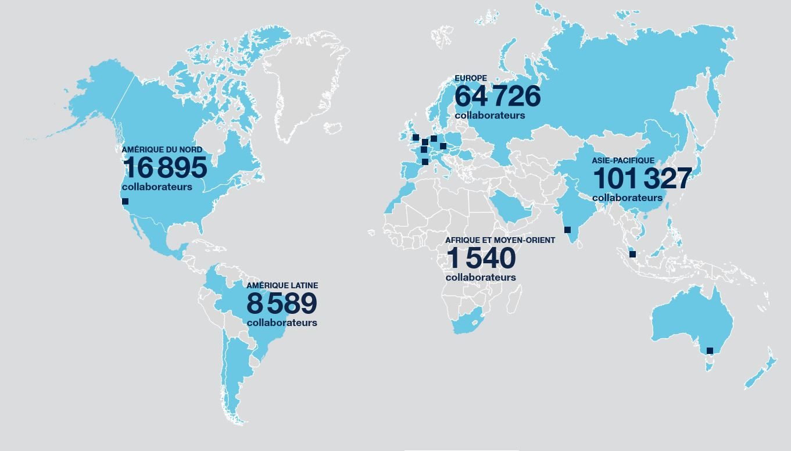

Capgemini figure parmi les principaux prestataires mondiaux de services informatiques avec un chiffre d'affaires s'élevant à 21 995 000€ en 2022.
Les chiffres-clés de 2022 de l'entreprise Capgemini
358 400 salariés et un chiffre d’affaires de 22 milliards d’euros en 2022
55 ans d’expérience et d’une grande expertise des différents secteurs d’activité
Présente dans plus de 50 pays
Forte d’environ 120 000 collaborateurs
Trésorerie et d’actifs de gestion de trésorerie formant un montant total de 4,2 milliards d’euros
Ses secteurs d'activité
Capgemini propose des services de conseil et de technologie à un large éventail de secteurs d'activité, notamment la finance, l'industrie, la santé, les télécommunications, les services publics, la distribution, l'aérospatiale et bien d'autres. La société travaille avec des entreprises de toutes tailles, des petites startups aux grandes multinationales.
On retrouve parmi ses concurrents et partenaires IBM France, SCC, Atos, Sopra Steria, Accenture, Econocom, CGI France, Alten et Inetum.
Une présence mondiale
Capgemini est une entreprise internationale présente dans de nombreux pays à travers le monde.
Elle opère dans différentes régions géographiques, notamment en Europe, en Amérique du Nord, en Asie-Pacifique et dans d'autres parties du globe.
Cette présence internationale lui permet de servir une clientèle mondiale diversifiée.

Effectifs
Capgemini comptait 358 400 salariés en 2022 à travers le monde.
L'entreprise se compose de consultants, d'experts en technologie, de développeurs, de gestionnaires de projet et d'autres professionnels qui travaillent en étroite collaboration avec les clients pour résoudre leurs défis informatiques.
Les performances de Capgemini de 2022
Le 31 décembre 2022, le Groupe disposait à son bilan d’une trésorerie et d’actifs de gestion de trésorerie pour un montant total de 4,2 milliards d’euros.
Compte tenu d’un encours de dettes financières de 6,8 milliards d’euros et des instruments dérivés, l’endettement net du Groupe s’inscrit en baisse à 2,6 milliards d’euros à la fin de l’exercice 2022 contre 3,2 milliards d’euros un an plus tôt
Comme nous pouvons le voir avec ce récapitulatif, Capgemini n'a cessé d'évoluer en 2022.
Le Groupe a réalisé en 2022 un chiffre d’affaires de 21 995 millions d’euros, en progression de +21,1% en données publiées par rapport à l’exercice 2021 (18 160M€).
La hausse de 11% des effectifs sur un an illustre la capacité de Capgemini à attirer les talents pour alimenter sa croissance.
Répartition du capital de l'entreprise
Ci-dessus se trouve la répartition du capital de Capgemini.
L'entreprise compte un nombre de 173 582 113 actions composant le capital.
Capgemini a distribué 564 millions d’euros en dividende à ses actionnaires au titre de l’exercice 2022.